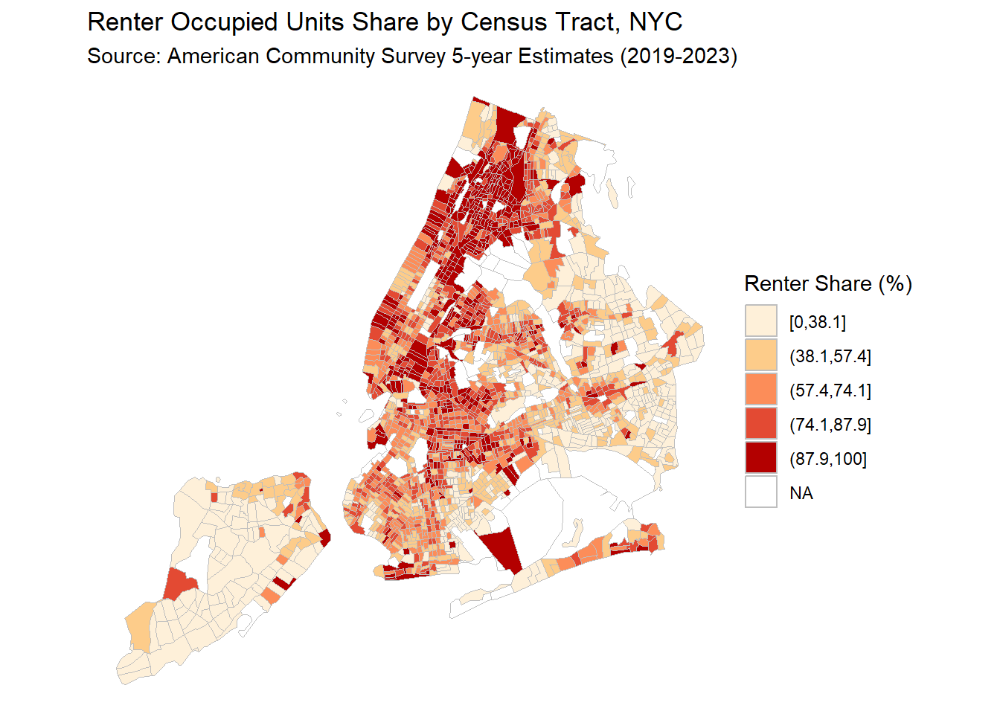
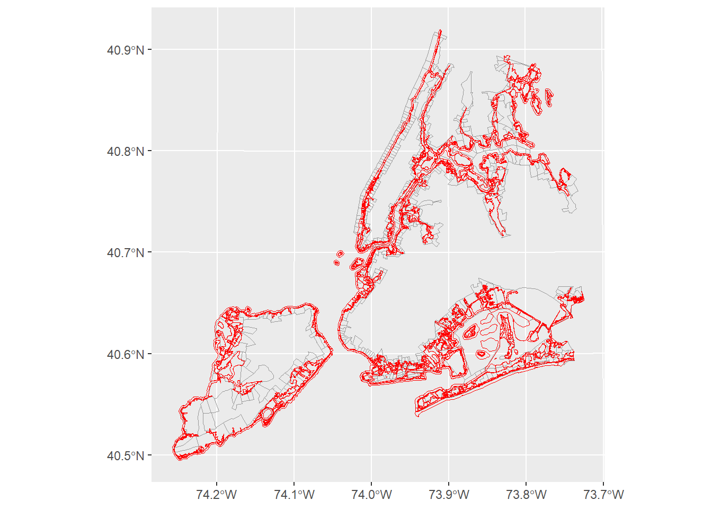
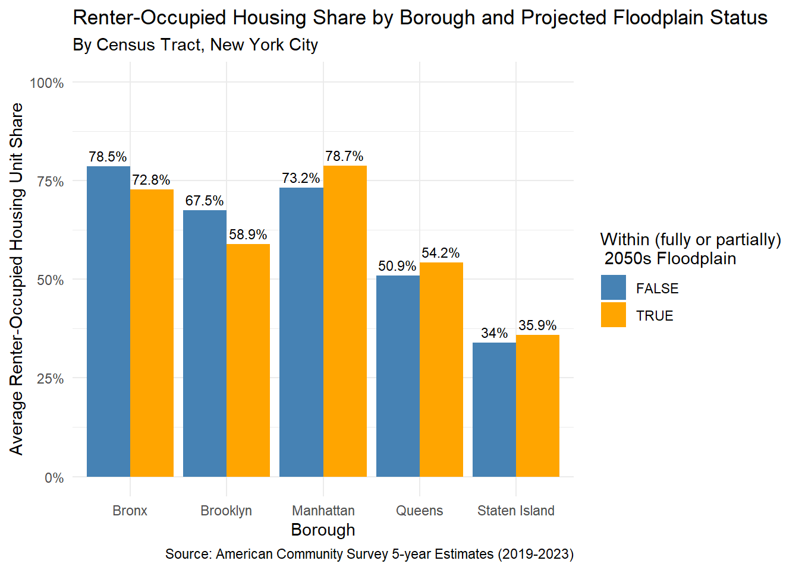

# You many need to install the package tidycensus
library(tidycensus)
library(tidyverse)
library(sf)Download and Analyze Census Data with 
11.118/11.218 Applied Data Science for Cities
Overview
In this lab, we will work with U.S. Census data to collect, integrate, and analyze information to answer a place-based question: who lives in areas at high risk of sea level rise in New York City? We will use tidycensus to pull tract-level American Community Survey (ACS) data, then intersect those tracts with floodplain data to identify tracts that partly or fully fall inside the projected 100-year floodplain.
A 100-year floodplain is the area with a 1% chance of flooding each year (not flooding happens only once every 100 years but rather, every year there’s a 1 in 100 chance of flood occurring). Floodplain maps show where flooding is most likely to happen during major storms and thus can guide insurance, building, and planning decisions. NYC has looked ahead to a “2050s floodplain”, based on climate projections from the New York City Panel on Climate Change, which accounts for rising sea levels and stronger storms.
A review of tidycensus key steps
In order to use tidycensus to download data, you’ll need the following:
A Census API key (Here is where you can request one)
Run the following line to install the API key (i.e. save this information in your R environment). Recommend including the argument
install = TRUEso you won’t need to reenter the key next time.census_api_key("YOUR KEY HERE", install = TRUE)A desired geography to look up (e.g., tract- or block group-level data)
The variables we want to look up (following the complete table codes). You can also retrieve a list of variables in R by calling
load_variables())The state or county that defines your study region.
The survey you’d like to use (e.g., Decennial Census, ACS 1-, or 5-year data)
The census year you want data for (e.g., the most recent 5-year data)
Another two arguments are usually included in this download call as well, because they are essential for integrating tidycensus results into the R data processing pipeline:
output = "wide"downloads data in a format that is easier for column-wise calculation. It does so by displaying two columns (“_E” and “_M”, representing the estimate and margin of error) for each variable.geometry = TRUEreturns a simple features (sf) object with spatial information saved for each tract, allowing you to immediately make a map.
A typical tidycensus workflow
The tidycensus package is extremely helpful because it streamlines the process of downloading, processing, and visualizing U.S. Census data all within R. After we download the data, we can continue to manipulate it (e.g. selecting and mutating the columns) for mapping or calculation.
Let’s use B25003: Tenure (Renter vs. Owner) as an example. This table tells us how many housing units are renter-occupied versus owner-occupied. In this example, we’ll request two variables: the total number of housing units (B25003_001E) and the number of renter-occupied units (B25003_003E).
B25003_Vars <- c("B25003_001", "B25003_003")
B25003 <- get_acs(
geography = "tract",
state = "NY",
county = c("Bronx", "Kings", "New York", "Queens", "Richmond"),
variables = B25003_Vars,
survey = "acs5",
year = 2023,
output = "wide",
geometry = TRUE
)Trim the table to keep only the “estimate” columns we need, and give them identifiable names for easier reference later.
B25003_df <- B25003 |>
select(GEOID,
tot_units = B25003_001E,
renter_units = B25003_003E)Then as we’ve shown in class, we can directly calculate the rental percentage and put the results on a map.
B25003_df |>
mutate(renter_pct = renter_units*100/tot_units,
renter_cut = cut_number(renter_pct, 5)) |>
ggplot() +
geom_sf(aes(fill = renter_cut), # fill color
color = "grey") + # border color
scale_fill_brewer(palette = "OrRd") +
theme_void() +
labs(title = "Renter Occupied Units Share by Census Tract, NYC",
subtitle = "Source: American Community Survey 5-year Estimates (2019-2023)",
fill = "Renter Share (%)") 
Compile More Census Variables
By consulting the Census table codes, we can download many additional tables of interest. For each table, the process is the same: make an API call, and then process the table.
If you are pulling data for the same location and year, it’s recommended to set them up as “constants”, (or, another name, “global variables”) as shown below. This way, if you later want to change something for all tables, for example, switch to block group-level data, you can simply modify the global variables and rerun the code.
geography <- "tract"
state <- "NY"
county <- c("Bronx", "Kings", "New York", "Queens", "Richmond")
year <- 2023
survey <- "acs5"Take a look at another table B01001: Sex by Age. This table is very useful when we want to calculate the percentage of the population under 18 or over 65. Since these totals involve multiple variables, you need to examine the table carefully and identify all the age groups that should be included.
# B01001: Sex by Age ----
B01001_Vars<-c("B01001_001",
"B01001_003",
"B01001_004",
"B01001_005",
"B01001_006",
"B01001_020",
"B01001_021",
"B01001_022",
"B01001_023",
"B01001_024",
"B01001_025",
"B01001_027",
"B01001_028",
"B01001_029",
"B01001_030",
"B01001_044",
"B01001_045",
"B01001_046",
"B01001_047",
"B01001_048",
"B01001_049")
# Make the API call
B01001 <- get_acs(
geography = geography,
state = state,
county = county,
variables = B01001_Vars,
survey = survey,
year = year,
output = "wide"
)A few notes here: I did not include geometry = TRUE in this call because we will later join it with the previous table, and it’s easier to work with a plain table for that purpose.
Below I show how to process the B01001 table and combine multiple columnss into two useful derived indicators: population under 18 and population 65+.
B01001_df <- B01001 |>
mutate(
under18_pop = (
B01001_003E + B01001_004E + B01001_005E +
B01001_006E + B01001_027E + B01001_028E +
B01001_029E + B01001_030E),
over65_pop = (
B01001_020E + B01001_021E + B01001_022E +
B01001_023E + B01001_024E + B01001_025E +
B01001_044E + B01001_045E + B01001_046E +
B01001_047E + B01001_048E + B01001_049E )
)
B01001_df <-
B01001_df |>
select(GEOID, tot_pop = B01001_001E, under18_pop, over65_pop)Next, we add a third table, B17001: Poverty Status. Same thing here, pick the variables we need, then create a variable for the population in poverty.
# B17001: Poverty Rate ----
B17001_Vars<-c("B17001_001",
"B17001_002")
B17001 <- get_acs(
geography = geography,
state = state,
county = county,
variables = B17001_Vars,
survey = survey,
year = year,
output = "wide"
)B17001_df <- B17001 |>
select(GEOID,
tot_pop_determined = B17001_001E,
pov_pop = B17001_002E)We have three tables now, let’s start to compile them.
We can certainly use left_join to do this, keeping B25003_df on the left and joining all the others to it. This would require three lines of left_join, though. If you have many tables (e.g., 10), reduce() would be a convenient shorthand tool.
reduce() is a function from the purrr package. It put all tables in a list(), and iterates through them, joining one by one. But you need to make sure B25003_df is the first. This ensures the result keeps its geometry, producing a spatial object.
acs_data <- reduce(
list(B25003_df, B01001_df, B17001_df),
left_join, by = "GEOID")Note: You can use
st_write()to save your data as a shapefile and explore it in other GIS tools.
Spatial Analysis using Census Data
Intersect with NYC floodplain
New York City has been frequently impacted by storm surge and has also been very proactive in planning and resilience efforts. The 100-Year Floodplain for the 2050s represents a projected scenario under an extreme sea-level rise of 2.5 feet by 2050.
Download this Future Floodplain 2050s from NYC OpenData. Below I’m using st_read() to read the file and give it a name floodplain.
floodplain <- st_read("data/Future Floodplain 2050s_20251007.geojson")The floodplain data contains fld_zone codes (e.g., "AE", "VE", "AO"), which are FEMA Flood Insurance Rate Map (FIRM) designations describing flood risk areas. Among them, AE, AO, and A are all Special Flood Hazard Areas (high-risk zones). VE zones are higher risk than AE zones because of wave impact. Below we filter out empty codes to keep only valid flood zones.
floodplain <- floodplain |> filter(fld_zone != "")What we want to do is a kind of “select by location”: identify the tracts that overlap with the floodplain, since these areas are more likely to be affected.
To do that we need to first align the coordinate reference system (CRS) of acs_data and floodplain. The two download data use different CRS, both geographic. In the code below, we are transforming them to 2263, the “State Plane” Long Island Zone for NYC.
acs_data <- st_transform(acs_data, 2263)
floodplain <- st_transform(floodplain, 2263)Last time, we looked at st_intersection(), which returns the actual overlapping geometry between two layers. While this time, the goal is not to cut the geometries. We just want to know which tracts intersect with the floodplain. For this, we use st_intersects().
impacted_tracts <- st_intersects(acs_data, floodplain)According to its documentation, st_intersects() returns an index list. If you look at the result impacted_tracts, each row in the list corresponds to a tract, and the numbers following it show the indices of the floodplain polygons that tract intersects. If a tract does not intersect any floodplain polygons, its element will be empty.
This kind of result makes it easy to create a logical indicator for whether each tract falls in the floodplain. Building on that, we can even incorporate this information back into acs_data.
acs_data <- acs_data |>
mutate(in_floodplain = (lengths(impacted_tracts) > 0))We added a new column in acs_data: in_floodplain, with values TRUE or FALSE, indicating whether each tract intersects the floodplain.
We can plot this for a quick visual check:
ggplot() +
geom_sf(data = acs_data |> filter(in_floodplain == TRUE),
fill = NA, color = "gray60")+
geom_sf(data = floodplain, color = "red", fill = NA) 
Construct tables and graphs
If you look at acs_data again, it looks quite similar to the opportunity zone dataset now, with a column indicating yes or no for being in the floodplain. Similarly, we can use this dataset to compare demographics between tracts affected and not affected by the 2050s floodplain.
For example, a quick ratio (or percentage) of the population living in projected high-risk flood areas.
acs_data |>
st_drop_geometry() |>
summarise(pop_ratio = sum(tot_pop[in_floodplain]) / sum(tot_pop)) pop_ratio
1 0.2337968Starting from our compiled acs_data, we will now process it further to calculate percentages. One important note: different ACS variables often have different universes (total counts), so be careful not to divide by the wrong totals.
acs_pct <- acs_data |>
st_drop_geometry() |>
mutate(renter_pct = renter_units/tot_units,
over65_pct = over65_pop/tot_pop,
pov_pct = pov_pop/tot_pop_determined) |>
select(GEOID, renter_pct:pov_pct, in_floodplain)NYC is unique in that it contains five counties, each corresponding to a borough.
| FIPS Code | County Name | Borough Name |
|---|---|---|
| 36047 | Kings County | Brooklyn |
| 36005 | Bronx County | Bronx |
| 36081 | Queens County | Queens |
| 36085 | Richmond County | Staten Island |
| 36061 | New York County | Manhattan |
Knowing that in GEOID, the first five digits represent the county code, we can modify the dataset a bit to identify which borough each tract belongs to.
acs_pct <-
acs_pct |>
mutate(borough = case_when(
substr(GEOID, 0, 5) == "36047" ~ "Brooklyn",
substr(GEOID, 0, 5) == "36005" ~ "Bronx",
substr(GEOID, 0, 5) == "36081" ~ "Queens",
substr(GEOID, 0, 5) == "36085" ~ "Staten Island",
substr(GEOID, 0, 5) == "36061" ~ "Manhattan"
))Finally, we’ve finished creating this dataset. As mentioned, we can now generate some statistics and graphs to compare the demographics between tracts affected and not affected by the floodplain, which is a process that typically involves group_by(), summarise(), and ggplot().
The example below shows a comparison of the average renter-occupied percentages for the two groups of areas. This is a straightforward calculation of the average. In addition to differences between the two groups, you can also observe some variation between boroughs.
# Take "renter_pct" as an example
# You can change the "renter_pct" to another variable
summary_data <- acs_pct |>
group_by(borough, in_floodplain) |>
summarise(avg_pct = mean(renter_pct, na.rm = TRUE), .groups = "drop")
ggplot(summary_data,
aes(x = borough, y = avg_pct, fill = in_floodplain)) +
geom_col(position = "dodge") +
geom_text(
aes(label = str_c(round(avg_pct * 100, 1), "%")),
position = position_dodge(width = 0.9),
vjust = -0.5, size = 3) + # adds numbers on top of bars
scale_y_continuous(labels = scales::percent, limits = c(0, 1)) + # y-axis in %
scale_fill_manual(values = c("TRUE" = "orange",
"FALSE" = "steelblue")) +
labs(
x = "Borough",
y = "Average Renter-Occupied Housing Unit Share",
fill = "Within (fully or partially)\n 2050s Floodplain",
title = "Renter-Occupied Housing Share by Borough and Projected Floodplain Status",
subtitle = "By Census Tract, New York City",
caption = "Source: American Community Survey 5-year Estimates (2019-2023)") +
theme_minimal()
Exercise
We’ve gone through the process of pulling and compiling several ACS variables we’re interested in. Your task is to add two new Census variables to this study. You are welcome to explore any other social and demographic variables available, and you can follow a similar process: pull the relevant variables, create a brief table, and join it to your acs_data. After that, perform a similar comparison analysis for these new variables. Include a short write-up summarizing what you observe from the results of your analysis, along with any critiques or thoughts you might have.
I’d recommend the following ACS variables for practice purposes:
B25106: Housing Cost Burden. The Department of Housing and Urban Development considers households that spend more than 30% of their income on housing, to be cost-burdened. Cost-burdened households may have less money for other necessities such as food or savings. This table takes some to read and would give you a good practice in reading ACS tables and selecting the correct variables.
B02001: Race OR B03001: Ethnicity. You can either pull a single variable (e.g., Hispanic or Black) or combine multiple variables (e.g., “non-white”) depending on your focus.
B19013: Median Household Income. This variable is slightly different because you don’t calculate a percentage. Instead, you can summarize the average for each group or tract.
Please create a Quarto document for this exercise and use it to document your work. You should be able to include most of the code you’ve written so far to continue working on it.
Tip: tidycensus often produces messages while running. To keep your document output clean, you can adjust your code chunk options to suppress them, for example, use message = FALSE and results = "hide".”
When you’re finished, please upload your report to Canvas by 9:00 AM on Wednesday, October 15.